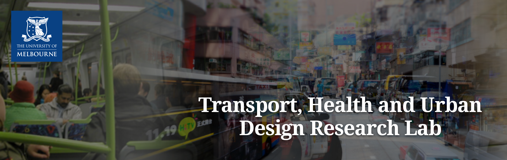

<!DOCTYPE html PUBLIC "-//W3C//DTD XHTML 1.0 Transitional//EN"
    "http://www.w3.org/TR/xhtml1/DTD/xhtml1-transitional.dtd">
<html xmlns="http://www.w3.org/1999/xhtml" xml:lang="en-au" lang="en-au">
</html>

<head>
<script type = "text/javascript">  
window.onload = function(){

 // This is to clear the previous clicked content.
  tabcontent = document.getElementsByClassName("tabcontent");
  for (i = 0; i < tabcontent.length; i++) {
    tabcontent[i].style.display = "none";
  }

  // Set the tab to be "active".
  tablinks = document.getElementsByClassName("tablinks");
  for (i = 0; i < tablinks.length; i++) {
    tablinks[i].className = tablinks[i].className.replace(" active", "");
  }

  // Display the clicked tab and set it to active.
  document.getElementById('Position').style.display = "block";
  evt.currentTarget.className += " active";
 
}  
</script>  


<script>
function clickHandle(evt, animalName) {
  let i, tabcontent, tablinks;

  // This is to clear the previous clicked content.
  tabcontent = document.getElementsByClassName("tabcontent");
  for (i = 0; i < tabcontent.length; i++) {
    tabcontent[i].style.display = "none";
  }

  // Set the tab to be "active".
  tablinks = document.getElementsByClassName("tablinks");
  for (i = 0; i < tablinks.length; i++) {
    tablinks[i].className = tablinks[i].className.replace(" active", "");
  }

  // Display the clicked tab and set it to active.
  document.getElementById(animalName).style.display = "block";
  evt.currentTarget.className += " active";
}
</script>
<link rel="stylesheet" type="text/css" href="scss.css" />
<meta http-equiv="Content-Type" content="text/html; charset=utf-8" />
<title>Dr. Kerry Nice, University of Melbourne </title>
<meta name="keywords" content="urban,climate,modelling,Australia" />
<meta name="dc.title" content="Kerry Nice"/>
</head>
<body>

<a name="content" id="skiplink"></a>
<center><h1>Dr. Kerry Nice</h1></center>

<div class="tab">
<button class="tablinks" onclick="clickHandle(event, 'Position')">Biography</button>    
<button class="tablinks" onclick="clickHandle(event, 'Publications')">Publications</button>
<button class="tablinks" onclick="clickHandle(event, 'Reports')">Reports</button>
<button class="tablinks" onclick="clickHandle(event, 'Conference Presentations')">Conference Presentations</button>
<button class="tablinks" onclick="clickHandle(event, 'Models')">Climate models</button>
<button class="tablinks" onclick="clickHandle(event, 'Peer Reviews')">Peer Reviews</button>
<button class="tablinks" onclick="clickHandle(event, 'Grants')">Grants</button>
<button class="tablinks" onclick="clickHandle(event, 'Professional Actitivies')">Professional Actitivies</button>
<button class="tablinks" onclick="clickHandle(event, 'Supervision')">Supervision</button>
<button class="tablinks" onclick="clickHandle(event, 'Media')">Media</button>
<button class="tablinks" onclick="clickHandle(event, 'Consulting')">Consulting</button>
</div>


<div id="Position" class="tabcontent">
<table style="width:100%">
<tr>
<th style="width:70%"></th><th style="width:30%"></th>
</tr>
<tr>
<td rowspan=2>
<h3>Position</h3>
Research Fellow, Transport, Health and Urban Design (THUD) research lab, Faculty of Architecture, Building and Planning,<br> University of Melbourne, 2016-Present.

<h3>Affiliations</h3>

<a href="https://thud.msd.unimelb.edu.au/"></a>&nbsp;&nbsp;
<a href="https://thud.msd.unimelb.edu.au/"><b>Transport, Health and Urban Design (THUD) research lab</b></a>
<p><a href="https://lifecoursecentre.org.au/members/dr-kerry-nice/"></a>&nbsp;&nbsp;<a href="https://lifecoursecentre.org.au/members/dr-kerry-nice/"><b>ARC Centre of Excellence for Children and Families over the Life Course (Life Course Centre)</b></a> 
<h3>Contact</h3>
Room 415, Level 4, Melbourne School of Design (Building 133),<br> The University of Melbourne, Victoria 3010 Australia
<br><strong>Email: <a href="mailto:kerry.nice@unimelb.edu.au">kerry.nice@unimelb.edu.au</a></strong> 
<br><strong><a href="https://twitter.com/mothlight">Twitter</a></strong>
<br><strong><a href="https://fediscience.org/web/@mothlight">Mastodon</a></strong>
<br><strong>Research Gate <a href="https://www.researchgate.net/profile/Kerry_Nice/">profile</a></strong>
<br><strong>Google Scholar <a href="https://scholar.google.com/citations?authuser=1&user=e1WoO3EAAAAJ">profile</a></strong>
<br><strong><a href="https://www.findanexpert.unimelb.edu.au/display/person793479">University of Melbourne profile</a></strong>
<div itemscope itemtype="https://schema.org/Person"><a itemprop="sameAs" content="https://orcid.org/0000-0001-6102-1292" href="https://orcid.org/0000-0001-6102-1292" target="orcid.widget" rel="noopener noreferrer" style="vertical-align:top;">https://orcid.org/0000-0001-6102-1292</a></div>
</td>    
<td>
</td>
</tr>
</table> 
<a name="Bio"/>
<center><h3>Biography</h3></center>
Building on a background in software engineering and urban climates, Dr. Kerry Nice's work uses modelling and artificial intelligence to study urban environments. His PhD at Monash University focused on the creation and use of an urban micro-climate model (VTUF-3D) to assess the positive human thermal comfort impacts in urban areas of increased urban vegetation and water sensitive design (WSUD) infrastructure.

<p>Kerry's research currently focuses on the investigation of urban factors impacting the accessibility of active transport, assessing the impacts of urban vegetation on transport, health, and micro-climates, and using artificial intelligence, especially deep learning using neural networks, to assess the influence of urban characteristics on urban environments and ultimately on the people who live there. Kerry previously worked as a senior and consulting software engineer in Colorado, New York, and London focusing on building enterprise level multi-tiered work flow applications. Kerry maintains membership in the International Association for Urban Climate (IAUC) and the Australian Meteorological and Oceanographic Society (AMOS).

<a name="ResearchAreas"/>
<center><h3>Research Areas</h3></center>
Research in urban climates and human thermal comfort (HTC) with a focus on urban micro climate modelling and WSUD (water sensitive urban design). 
<br>Research in urban design, transport, health, micro-climates, and urban green space typology using neural network machine learning, agent based modelling, and climate modelling. 
<br>Software engineering using Java J2EE for application development and architecture.

</p><a name="Qualifications"/>
<center><h3>Qualifications</h3></center>

<ul>
<li>PhD., March 2017, Monash University. </li>
<li>M.E.S, 2011, Monash University. </li>
<li>B.A, 1990, University of Colorado, Boulder. </li>
</ul>

<center><h3>Previous positions</h3></center>
<p> Research Fellow, School of Earth, Atmosphere and Environment, Monash University/CRC for Water Sensitive Cities, 2016-2021.


</div>


<div id="Models" class="tabcontent">
<a name="ModelsAndSourceCode"/>
<center><h3>Climate models and source code</h3></center>

The Air-temperature Response to Green/blue-infrastructure Evaluation Tool (TARGET v1.0): an efficient and user-friendly model of city cooling. <a href="https://bitbucket.org/mothlight/target_java/src/master/">Source code (Java)</a> <a href="https://mothlight.github.io/target_model/index.html">Documents</a> <a href="https://github.com/mothlight/Target-Java.v2">Source code (Java V2)</a>

<p>Development of the VTUF-3D v1.0 urban micro-climate model to support assessment of urban vegetation influences on human thermal comfort. <a href="https://github.com/mothlight/VTUF-3D">Source code (FORTRAN)</a> <a href="https://github.com/mothlight/VTUF-3D-Java.v2/">Source code V2 (Java)</a> 
</div>


<div id="Publications" class="tabcontent">
<!-- -------------------------------------------------------------------------------- -->
<a name="Publications"/>
<center><h3>Publications</h3></center>

<!--<div w3-include-html="publications.html"></div>-->


<p><center><b>2022</b></center>

<p>Debjit Bhowmick, Ben Beck, Meead Saberi, Mark Stevenson, Jason Thompson, Meghan Winters, Trisalyn Nelson, Simone Zarpelon Leao, Sachith Seneviratne, Christopher Pettit, Le Hai Vu, <b>Kerry Nice</b>, A systematic scoping review of methods for estimating link-level bicycle volumes, <i>Transport Reviews</i>, 2022. <a href="https://doi.org/10.1080/01441647.2022.2147240">Journal article</a>  

<p>Pui Kwan Cheung, C.Y. Jim, Nigel Tapper, <b>Kerry A. Nice</b>, Stephen J. Livesley, Daytime irrigation leads to significantly cooler private backyards in summer, <i>Urban Climate</i>, 2022. <a href="https://doi.org/10.1016/j.uclim.2022.101310">Journal article</a>

<p><b>Kerry A. Nice</b>, Negin Nazarian, Mathew J. Lipson, Melissa A. Hart, Sachith Seneviratne, Jason Thompson, Marzie Naserikia, Branislava Godic, and Mark Stevenson, Isolating the impacts of urban form and fabric from geography on urban heat and human thermal comfort, <i>Building and Environment</i>, 2022. <a href="https://www.essoar.org/doi/10.1002/essoar.10511203.2">Preprint</a> <a href="https://doi.org/10.1016/j.buildenv.2022.109502">Journal article</a>

<p>Mathew J. Lipson, Negin Nazarian, Melissa A. Hart, <b>Kerry A. Nice</b> and Brooke Conroy, A transformation in city-descriptive input data for urban climate models, <i>Frontiers in Environmental Science: Environmental Informatics and Remote Sensing</i>, 2022. <a href="https://doi.org/10.3389/fenvs.2022.866398">Journal article (open access)</a>.

<p>Pui Kwan Cheung, <b>Kerry Nice</b>, Stephen Livesley, Irrigating urban greenspace for cooling benefits: the mechanisms and management considerations, <i>Environmental Research: Climate</i>, 2022. <a href="https://iopscience.iop.org/article/10.1088/2752-5295/ac6e7c">Journal article (open access)</a>.

<p>Jasper S. Wijnands, <b>Kerry A. Nice</b>, Sachith Seneviratne, Jason Thompson, and Mark Stevenson, The impact of the COVID-19 pandemic on air pollution: A global assessment using machine learning techniques, <i> Atmospheric Pollution Research</i>, 2022. <a href="https://doi.org/10.1016/j.apr.2022.101438">Journal article</a> <a href="https://www.researchgate.net/publication/360306998_The_impact_of_the_COVID-19_pandemic_on_air_pollution_A_global_assessment_using_machine_learning_techniques">Pre-print</a>.

<p>Ben Beck, Meghan Winters, Trisalyn Nelson, Chris Pettit, Meead Saberi, Jason Thompson, Sachith
Seneviratne, <b>Kerry Nice</b>, Simone Zarpelon Leao, Mark Stevenson, Developing urban biking typologies: quantifying the complex interactions of bicycle ridership, bicycle network and built environment characteristics, <i>Environment and Planning B: Urban Analytics and City Science</i>, 2022. <a href="https://osf.io/preprints/socarxiv/8w7bg/">Pre-print</a> <a href="https://doi.org/10.1177%2F23998083221100827">Journal article</a>.

<p>Jason Thompson, Rod McClure, Tony Blakely, Nick Wilson, Michael G. Baker, Jasper S. Wijnands, Thiago Herick De Sa, <b>Kerry Nice</b>, Camilo Cruz, Mark Stevenson, Modelling SARS-CoV-2 disease progression in Australia and New Zealand: an account of an agent-based approach to support public health decision-making, <i>Australian and New Zealand Journal of Public Health</i>, 2022. https://doi.org/10.1111/1753-6405.13221 <a href="https://onlinelibrary.wiley.com/doi/10.1111/1753-6405.13221">Journal article (open access)</a>.
<br/>&nbsp;&nbsp;&nbsp;&nbsp;&nbsp;&nbsp;&nbsp;&nbsp;&uarr; Jason Thompson, Rod McClure, Tony Blakely, Nick Wilson, Michael G. Baker, Thiago Herick De Sa, <b>Kerry Nice</b>, Jasper Wijnands, Gideon Aschwanden, Camilo Cruz, Mark Stevenson, Modelling the estimated likelihood of eliminating the SARS-CoV-2 pandemic in Australia and New Zealand under public health policy settings: an agent-based-SEIR approach, <a href="https://papers.ssrn.com/sol3/papers.cfm?abstract_id=3588074">Pre-print</a> (Published as above).


<p><center><b>2021</b></center>
<p>Sachith Seneviratne, <b>Kerry A. Nice</b>, Jasper Wijnands, Jason Thompson, Mark Stevenson, Self-supervision, Remote Sensing and Abstraction: Representation Learning across 3 million locations, <i>Digital Image Computing: Techniques and Applications 2021, Gold Coast, 29 Nov-1 Dec 2021</i>, 2021, <a href="https://doi.org/10.1109/DICTA52665.2021.9647061">Conference paper</a> and <a href="http://dicta2021.dictaconference.org/poster_session2.html#seneviratne">Conference presentation</a>.

<p>Pui Kwan Cheung, Stephen J. Livesley, <b>Kerry A. Nice</b>, Estimating the cooling potential of irrigating green spaces in 100 global cities with arid, temperate or continental climates, <i>Sustainable Cities and Society</i>, 2021, DOI:10.1016/j.scs.2021.102974, <a href="https://doi.org/10.1016/j.scs.2021.102974">Journal article</a>.

<p><center><b>2020</b></center>

<p>Jasper S. Wijnands, Haifeng Zhao, <b>Kerry A. Nice</b>, Jason Thompson, Katherine Scully, Jingqiu Guo, Mark Stevenson, Identifying safe intersection design through unsupervised feature extraction from satellite imagery, <i>Computer-Aided Civil and Infrastructure Engineering</i>, 2020, DOI:10.1111/mice.12623, <a href="https://doi.org/10.1111/mice.12623">Journal article</a>.

<p><b>Nice, K.A.</b>, Thompson, J., Wijnands, J. S., Aschwanden, G.D.P.A, Stevenson, M., The “Paris-end” of town? Deriving urban typologies using three imagery types, <i>Urban Sci.</i>, 2020, <a href="https://www.mdpi.com/2413-8851/4/2/27">Journal article</a> <a href="https://arxiv.org/abs/1910.03220">arXiv Pre-print</a>.

<p>Thompson, J., Stevenson, M., Wijnands, J. S., <b>Nice, K.</b>, Aschwanden, G.D.P.A., Silver, J., Nieuwenhuijsen, M., Rayner, P., Schofield, R., Hariharan, R., and Morrison, C. N., A global analysis of urban design types and road transport injury: an image processing study, <i>The Lancet Planetary Health</i>, 2020, 10.1016/S2542-5196(19)30263-3, <a href="https://www.thelancet.com/journals/lanplh/article/PIIS2542-5196(19)30263-3/fulltext">Journal article</a> <a href="https://ssrn.com/abstract=3307635">SSRN Pre-print</a>.

<p> Gál, C. V and <b>Nice, K. A.</b> ‘Mean radiant temperature modeling outdoors: A comparison of three approaches’, in <i>100th Annual Meeting of the American Meteorological Society (AMS) jointly with the 15th Symposium on the Urban Environment</i>, 2020. <a href="https://www.researchgate.net/publication/339365612_Mean_radiant_temperature_modeling_outdoors_A_comparison_of_three_approaches"> Conference Paper</a> 

<p>Naika Meili, Gabriele Manoli, Paolo Burlando, Elie Bou-Zeid, Winston T.L. Chow, Andrew M. Coutts, Edoardo Daly, <b>Kerry A. Nice</b>, Matthias Roth, Nigel J. Tapper, Erik Velasco, Enrique R. Vivoni, and Simone Fatichi, An urban ecohydrological model to quantify the effect of vegetation on urban climate and hydrology (UT&C v1.0), <i>Geosci. Model Dev.</i>, 2020, <a href="https://www.geosci-model-dev.net/13/335/2020/gmd-13-335-2020.html">Journal article</a>. 

<p>Todorovic, Tatjana, London, Geoffrey, Bertram, Nigel, Sainsbury, Oscar, Renouf, Marguerite A, <b>Nice, Kerry A</b> and Kenway, Steven J. 2019. 'Models for water sensitive middle suburban infill development', in 9th State of Australian Cities National Conference, 30 November - 5 December 2019, Perth, Western Australia. doi: 10.25916/5efa774bda643. <a href="https://apo.org.au/node/306554">Conference Paper</a>.

<p><center><b>2019</b></center>

<p><b>Nice, K.A.</b>, Wijnands, J. S., Middel, A., Wang, J., Qiu, Y., Zhao, N., Thompson, J., Aschwanden, G.D.P.A., Zhao, H., and Stevenson, M., Sky pixel detection in outdoor imagery using an adaptive algorithm and machine learning, <i>Urban Climate</i>, 2020. <a href="https://arxiv.org/abs/1910.03182">Pre-print</a>. <a href="https://doi.org/10.1016/j.uclim.2019.100572">Journal article</a>

<p>Stevenson, Mark; Thompson, Jason; Wijnands, Jasper; <b>Nice, Kerry</b>; Aschwanden, Gideon; Zhao, Haifeng, Opportunities to reduce road traffic injury: new insights from the study of urban areas. <i>International Journal of Injury Control and Safety Promotion</i>, 2019. <a href="https://www.tandfonline.com/doi/full/10.1080/17457300.2019.1704790">Journal article</a>

<p>Wijnands, J. S., Thompson, J., <b>Nice, K.</b>, Aschwanden, G.D.P.A., and Stevenson, M., Real-time monitoring of driver drowsiness on mobile platforms using 3-D neural networks. <i>Neural Computing and Applications</i>, 2019 <a href="https://doi.org/10.1007/s00521-019-04506-0">Journal article</a>, <a href="https://arxiv.org/abs/1910.06540">Preprint</a>.

<p>Zhao, Haifeng and Wijnands, Jasper and <b>Nice, Kerry</b> and Thompson, Jason and Aschwanden, Gideon and Guo, Jingqiu and Stevenson, Mark, Reducing Cyclist Crashes by Assessing the Road Environment: An Application of Google Imagery and Machine Learning. <i>Journal of Transport &amp; Health</i>, 2019 <a href="https://doi.org/10.1016/j.jth.2019.100698">Journal article</a>.

<p>Aschwanden, G.D.P.A., Wijnands, J. S., Thompson, J., <b>Nice, K.A.</b>, and Stevenson, M. Learning To Walk: modelling transportation mode choice distribution through neural networks. <i>Environment and Planning B: Urban Analytics and City Science</i>, 2019  <a href="https://journals.sagepub.com/doi/full/10.1177/2399808319862571">Journal article</a>.

<p>Wijnands, J., <b>Nice, K.</b>, Thompson, J., Zhao, H. and Stevenson, M. Streetscape augmentation using generative adversarial networks: optimising health and wellbeing., <i>Sustainable Cities and Society</i>, 2019. <a href="https://www.sciencedirect.com/science/article/pii/S221067071831905X">Journal article</a>, <a href="https://arxiv.org/abs/1905.06464">Preprint</a>.

<p>Dommenget, D., <b>Nice, K.</b>, Bayr, T., Kasang, D., Stassen, C., and Rezny, M.: The Monash Simple Climate Model Experiments (MSCM-DB v1.0): An interactive database of mean climate, climate change and scenario simulations, <i>Geosci. Model Dev.</i>, https://doi.org/10.5194/gmd-12-2155-2019, 2019. <a href="https://doi.org/10.5194/gmd-12-2155-2019">Journal article</a>

<p>Broadbent, A., Coutts, A., <b>Nice, K.</b>, Demuzere, M., Krayenhoff, E., Tapper, N. and Wouters, H., The Air-temperature Response to Green/blue-infrastructure Evaluation Tool (TARGET v1.0): an efficient and user-friendly model of city cooling. <i>Geosci. Model Dev.</i>, 2019.  <a href="https://www.geosci-model-dev.net/12/785/2019/">Journal article</a>

<p><center><b>2018</b></center>
<p><b>Nice, K. A.</b>, Coutts, A., and Tapper, N.J., Development of the VTUF-3D v1.0 urban micro-climate model to support assessment of urban vegetation influences on human thermal comfort. <i>Urban Climate</i>, 2018. http://dx.doi.org/10.1016/j.uclim.2017.12.008. <a href="https://figshare.com/articles/Development_of_the_VTUF-3D_v1_0_urban_micro-climate_model_to_support_assessment_of_urban_vegetation_influences_on_human_thermal_comfort/6131159">Journal article</a>

<p><center><b>2016</b></center>
<p><b>Nice, K. A.</b>, Development, validation, and demonstration of the VTUF-3D v1.0 urban micro-climate model to support assessments of urban vegetation influences on human thermal comfort. 2016, PhD Thesis. Monash University. <a href="https://figshare.com/articles/Development_validation_and_demonstration_of_the_VTUF-3D_v1_0_urban_micro-climate_model_to_support_assessments_of_urban_vegetation_influences_on_human_thermal_comfort/4679413">Thesis</a>
<p><center><b>2011</b></center>
<p><b>Nice, K. A.</b>, The micro-climate of a mixed urban parkland environment. Masters Thesis, 2011. Monash University. <a href="https://figshare.com/articles/Nice_-_2011_-_The_micro-climate_of_a_mixed_urban_parkland_environment_-_Unknown_pdf/6131138">Thesis</a>

<hr><a name="BookChapters"/>
<center><h3>Book Chapters</h3></center>
<p><center><b>2019</b></center>
<p>Haifeng Zhao, Jasper S. Wijnands, <b>Kerry A. Nice</b>, Jason Thompson, Gideon D. P. A. Aschwanden, Mark Stevenson, Jingqiu Guo (2019) Unsupervised Deep Learning to Explore Streetscape Factors Associated with Urban Cyclist Safety. In: Qu X., Zhen L., Howlett R., Jain L. (eds) <i>Smart Transportation Systems 2019. Smart Innovation, Systems and Technologies</i>, vol 149. Springer, Singapore. <a href="https://link.springer.com/chapter/10.1007%2F978-981-13-8683-1_16">Book chapter</a>

<hr>
<p><center><b>Submitted / Preprints</b></center>

<p>Sachith Seneviratne, Jasper Wijnands, <b>Kerry Nice</b>, Haifeng Zhao, Branislava Godic, Suzanne Mavoa, Rajith Vidanaarachchi, Mark Stevenson, Leandro Garcia, Ruth Hunter, Jason Thompson, Urban feature analysis from aerial remote sensing imagery using self-supervised and semi-supervised computer vision, <i>Engineering Applications of Artificial Intelligence</i>, (Under review) <a href="https://arxiv.org/abs/2208.08047">Pre-print</a>.

<p>Ben Beck, Chris Pettit, Meghan Winters, Trisalyn Nelson, Hai L. Vu, <b>Kerry Nice</b>, Sachith Seneviratne, Meead Saberi, Association between network characteristics and bicycle ridership across a large metropolitan region, <i>International Journal of Sustainable Transportation</i>, (Under Review). https://doi.org/10.31219/osf.io/39ke6 <a href="https://osf.io/39ke6/">Pre-print</a>.

<p>Ruth F. Hunter, Leandro Garcia, Mark Stevenson, <b>Kerry Nice</b>, Jasper S. Wijnands, Frank Kee, Geraint
Ellis, Neil Anderson, Sachith Seneviratne, Mehdi Moeinaddini, Branislava Godic, Selin Akaraci, and Jason
Thompson, Computer vision, causal inference and public health modelling approaches to generate evidence on the impacts of urban planning in non-communicable disease and health inequalities in UK and Australian cities: A proposed collaborative approach, <i>Frontiers in Public Health</i>, (Under Review).

<p>Cristina E. Ramalho, Brenda Lin, <b>Kerry A. Nice</b>, Melanie Davern, Kate Lee, Steve Livesley, Luis Mata, Caragh G. Threlfall, Jason Byrne, Thomas Astell-Burt, Melanie Lowe, Leila Farahani, Casey Furlong, Kirsten Parris, Alison Haynes, At the nexus between urban green space attributes and functions – a framework to support planning and design, <i>Landscape and Urban Planning</i>, (Under Review).

<p>Haifeng Zhao, Jasper S. Wijnands, <b>Kerry A. Nice</b>, Jason Thompson, Gideon D.P.A. Aschwanden, Jingqiu Guo, and Mark Stevenson, Identifying features of road environments associated with cyclist crashes using generative adversarial networks, <i>Remote Sensing</i>, (Under Review).

<p><b>Nice, K.A.</b>, Aschwanden, G.D.P.A., Wijnands, J. S., Thompson, J., Zhao, H., and Stevenson, M., The Nature of Human Settlement: Building an understanding of high performance city design.  <i>arXiv</i> <a href="https://arxiv.org/abs/1910.03219">Pre-print</a>. Available at: https://arxiv.org/abs/1910.03219.

<hr>
<p><center><b>In Preparation</b></center>

Mathew Lipson, Sue Grimmond, Martin Best, Gab Abramowitz, Andrew Coutts, Nigel Tapper, Jong-Jin Baik, Meiring Beyers, Lewis Blunn, Souhail Boussetta, Elie Bou-Zeid, Martin G. De Kauwe, Cécile de Munck, Matthias Demuzere, Simone Fatichi, Krzysztof Fortuniak, Beom-Soon Han, Maggie Hendry, Yukihiro Kikegawa, Hiroaki Kondo, Doo-Il Lee, Sang-Hyun Lee, Aude Lemonsu, Tiago Machado, Gabriele Manoli, Alberto Martilli, Valéry Masson, Joe McNorton, Naika Meili, David Meyer, <b>Kerry A. Nice</b>, Keith W. Oleson, Seung-Bu Park, Michael Roth, Robert Schoetter, Andres Simon, Gert-Jan Steeneveld, Ting Sun, Yuya Takane, Marcus Thatcher, Aristofanis Tsiringakis, Mikhail Varentsov, Chenghao Wang, Zhi-Hua Wang, Andrew Pitman, Evaluation of 30 urban land surface models in the Urban-PLUMBER project: Phase 1 results, <i>Quarterly Journal of the Royal Meteorological Society</i>. 

<p>Branislava Godic, Selin Akaraci, Rajith Vidanaarachchi, <b>Kerry Nice</b>, Sachith Seneviratne, Suzanne Mavoa, Ruth Hunter, Leandro Garcia, Mark Stevenson, Jasper S. Wijnands, and Jason Thompson, Finding Australian Health Datasets: A content analysis within Australian population health surveys.

<p>Ellie Traill, <b>Kerry A. Nice</b>, Nigel Tapper, Julie Arblaster, Pavement watering as an urban heat mitigation technique, <i>Urban Climate</i>.

<p><b>Kerry A. Nice</b>, Matthias Demuzere, Andrew Coutts, Nigel Tapper, Present day and future urban cooling enabled by integrated water management, <i>Frontiers in Sustainable Cities</i>.

<p>Valentina Marchionni, Christopher Szota, Claire Farrell, Stephen Livesley, <b>Kerry A. Nice</b>, Veljko Prodanovic, Sally Thompson, Edoardo Daly, Pui Kwan Cheung, Hamideh Nouri, Brandon Winfrey, The role of water in urban greening in a hotter and drier climate: benefits, costs, and future challenges for Australian cities, <i>Journal of Hydrology</i>.

<p><b>Kerry A. Nice</b>, Jason Thompson, et al., Transportation systems and pollution in cities in 2020, <i>Lancet Public Health</i>.

</div>


<div id="Peer Reviews" class="tabcontent">
<!-- -------------------------------------------------------------------------------- -->
<a name="PeerReviews"/>
<center><h3>Peer reviews</h3></center>
<a href="https://www.webofscience.com/wos/author/record/N-2794-2018">Reviews</a>
<ul>
<li>Advances in Meteorology
<li>Atmosphere
<li>Building Simulation
<li>Designs
<li>Environment and Planning B: Urban Analytics and City Science
<li>Environmental Research Letters
<li>Environmental Science & Technology
<li>Forests
<li>Indoor and Built Environment
<li>Information Processing in Agriculture
<li>International Journal of Climatology
<li>Landscape and Urban Planning
<li>Science of the Total Environment
<li>Scientific Reports
<li>Sustainability 
<li>Sustainable Cities and Society
<li>Theoretical and Applied Climatology 
<li>Urban Climate 
</ul> 
<ul>
<li>Australian Research Council grants
</ul>
</div>


<div id="Reports" class="tabcontent">
<!-- -------------------------------------------------------------------------------- -->
<a name="Reports"/>
<center><h3><b>Reports</b></h3></center>

<p><center><b>2022</b></center>


<p>Mark Siebentritt, Malcolm Eadie, Tim Watson, Sarah Day, Nigel Tapper, <b>Kerry Nice</b>, Negin Nazarian, Sebastian Pfautsch (2022). Cool Suburbs: User Guide and Science Rationale. Western Sydney Regional Organisation of Councils.  <a href="https://coolsuburbs.com.au/tools">Report</a> 

<p><center><b>2021</b></center>

<p>Nice, K. (2021). Managing urban heat in water sensitive cities: research and policy responses. Melbourne, Australia: Cooperative Research Centre for Water Sensitive Cities. <a href="https://watersensitivecities.org.au/content/managing-urban-heat-in-water-sensitive-cities-research-and-policy-responses/">Report</a>

<p><center><b>2020</b></center>

<p>Fishermans Bend Taskforce (2020) Fishermans Bend Urban Ecology Study: Volume 1 September 2020. Available at: https://www.fishermansbend.vic.gov.au/__data/assets/pdf_file/0036/179667/3137218_Fishermans-Bend_Report_A4_Landscape_sml.v2.pdf. <a href="https://www.fishermansbend.vic.gov.au/__data/assets/pdf_file/0036/179667/3137218_Fishermans-Bend_Report_A4_Landscape_sml.v2.pdf">Report</a>

<p>Fishermans Bend Taskforce (2020) Fishermans Bend Urban Ecology Study: Volume 2: Background/Appendix February 2020. Available at: https://www.fishermansbend.vic.gov.au/__data/assets/pdf_file/0035/179666/3137218-Draft-FishBend_UES_Report_Vol2-appendix.pdf. <a href="https://www.fishermansbend.vic.gov.au/__data/assets/pdf_file/0035/179666/3137218-Draft-FishBend_UES_Report_Vol2-appendix.pdf">Report</a>

<p>Renouf, M. A., Kenway, S. J., Bertram, N., London, G., Sainsbury, O., Todorovic, T., <b>Nice, K.A.</b>, Surendran, S., and Moravej, M. (2020). Salisbury case study final report: water sensitive outcomes for infill development. Melbourne, Cooperative Research Centre for Water Sensitive Cities, <a href="https://watersensitivecities.org.au/content/water-sensitive-outcomes-for-infill-development-salisbury-case-study-final-report/">Report</a>

<p>Zhu, Y., <b>Nice, K.</b>, Eadie, M. (2020). Knutsford Urban Heat Modelling Report. Melbourne, Australia: Water Sensitive Cities Institute

<p>Renouf, M. A., Kenway, S. J., Bertram, N., London, G., Todorovic, T., Sainsbury, O., <b>Nice, K. A.</b>, Moravej, M., Pype, M.-L., Sochacka, B. & Surendran, M. 2020. Infill Performance Evaluation Framework. Melbourne: Cooperative Research Centre for Water Sensitive Cities (https://watersensitivecities.org.au/content/project-irp4/), <a href="https://watersensitivecities.org.au/wp-content/uploads/2020/09/IRP4_Evaluation-Framework.pdf">Report</a>.


<p><center><b>2019</b></center>
Tapper, N., Lloyd, S., McArthur, J., <b>Nice, K.</b>, and Jacobs, S. (2019). Estimating the economic benefits of Urban Heat Island mitigation – Biophysical Aspects. CRCWSC Milestone Report. Melbourne, Australia: Cooperative Research Centre for Water Sensitive Cities https://watersensitivecities.org.au/content/estimating-the-economic-benefits-of-urban-heat-island-mitigation-biophysical-aspects/ <a href="https://watersensitivecities.org.au/content/estimating-the-economic-benefits-of-urban-heat-island-mitigation-biophysical-aspects/">Report</a>
<p><center><b>2014</b></center>
Coutts, Andrew; Demuzere, Matthias; Tapper, Nigel; Daly, Edoardo; Beringer, Jason; Nury, Sultana; Broadbent, Ashley; Harris, Richard; Gebert, Luke; <b>Nice, Kerry</b>, (2014), The impacts of harvesting solutions and WSUD on evaporation and the water balance and feedbacks to urban hydrology and stream ecology, Cooperative Research Centre for Water Sensitive Cities. <a href="https://lirias.kuleuven.be/retrieve/301726">Report</a>
<p><center><b>2012</b></center>
<p> Nice, K. (2012), Urban climate model selection for modelling WSUD features.
Technical report, Cities as Water Supply Catchments, Project 3: Green Cities
and Micro-climate.
</div>


<div id="Grants" class="tabcontent">
<!-- -------------------------------------------------------------------------------- -->
<a name="Grants"/>
<center><h3>Grants</h3></center>

<p><center><b>2022</b></center>

<p>ARC Centre of Excellence for Children and Families over the Life Course (Life Course Centre): Agile Funding Grant Scheme 2022, 'Computer vision applications to derive a spatial index of access to social services'. (Prof Mark Stevenson, A/Prof Hayley Christian, Dr Sachith Seneviratne, Dr Kerry Nice, Dr Andrea Nathan, Dr Julia de Bruyn)

<p><center><b>2021</b></center>

<p>2021-2023 $422,000 ARC Discovery DP210102089, Sustainable mobility: city-wide exposure modelling to advance bicycling, Dr Ben Beck, Monash University, <a href="https://dataportal.arc.gov.au/NCGP/Web/Grant/Grant/DP210102089">Grant</a>

<p>2021, Swiss National Science Foundation, Project ID 200021_201029, 453,764 CHF, Heat-Down: Integrated modelling of stormwater and urban heat for cooling cities,  Dr. João P. Leitão (Department Urban Water Management, Eawag), Dr. Peter M. Bach (Department of Urban Water Management, Eawag), Dr. Kerry Nice (University of Melbourne/Monash Uni/CRC for Water Sensitive Cities, Australia), Dr. ir. Frans van de Ven (TU Delft and Deltares, The Netherlands), Dr. Cintia Dotto (City of Melbourne, Australia). <a href="https://urbanbeatsmodel.com/research-projects/heat-down/">Grant</a>

<p><center><b>2020</b></center>

<p>2020, Melbourne Energy Institute, The effects of COVID-19 on reduced transport and emissions for global city typologies.  AUD$30,000

<p>2020-2023, A Vision of Healthy Urban Design for NCD Prevention, NHMRC/1194959, NHMRC UKRI-NHMRC Built Environment And Prevention Research Scheme,Oct 2020, NHMRC UKRI 20/23 - THOMPSON, AUD$608,910.90, <a href="https://www.grants.gov.au/Ga/Show/7A2F2380-E8CE-6E49-6CF1-F807CD223ED9">NHMRC Grant</a>,   <a href="https://gtr.ukri.org/projects?ref=MR%2FT038934%2F1">UKRI Grant</a>

<p><center><b>2016</b></center>
<p>2016 Graham Treloar Early Career Researcher Fellowship/ABP Research ECR Project Grant (The University of Melbourne) for the development of your project "Urban canyon mean radiant temperatures predictions through mining Google Street View imagery and neural network machine learning". AUD$10,000.

<p>&nbsp;</p>
<hr><a name="SubmittedGrants"/>
<center><h3>Submitted grant applications</h3></center>

<p><center><b>2022</b></center>

<p>2022, Asia-Pacific Network for Global Change Research (APNIS), CRRP2022-SP1421-Jain, 'Building Resilient Transit Systems - A Case Study-Based Approach for Developing Countries', Deepty Jain (Indian Institute of Technology Delhi), Rifai Mardin (Tadulako University), Vijay Gopal Kovvali (Indian Institute of Technology Delhi), Sai Chand (Indian Institute of Technology Delhi), Geetam Tiwari (Indian Institute of Technology Delhi), Mark Stevenson (University of Melbourne), Kerry Nice (University of Melbourne)


<p>2022, Concurso FONDEF IDEA I+D 2023 (Chile), 'Desarrollo de instrumentos públicos basados en ciencia para el recambio y nueva infraestructura verde urbana (IVU) que enfríe las ciudades en un contexto de escasez y riesgo hídrico (Development of public policies based on science for the transformation and development of green urban infrastructure (IVU) that cool down cities in a context of water scarcity and risk)', Sergio Vera (Pontificia Universidad Católica de Chile), Ignacio Vargas Cucurella (Pontificia Universidad Católica de Chile), Waldo Bustamante (Pontificia Universidad Católica de Chile), Andrea Pianella (University of Melbourne), Kerry Nice (University of Melbourne), Cynnamon Dobbs (University of Connecticut).

<p>2022, Australian Research Council, Mid-Career Industry Fellowship 2023, 'Cooling urban environments through smart irrigation and urban greening'.

<strike><p>2022, Australian Research Council, Discovery Early Career Researcher Award 2023, 'Achieving urban heat mitigation through blue-green infrastructure'.</strike>
<p><center><b>2021</b></center>
<strike><p>2021, AURIN High Impact Projects 2021, "Climate Resilient and Just Cities: Data for Research and Practice", Dr. Negin Nazarian (UNSW). (Dr. Negin Nazarian, Prof. Chris Pettit, A/Prof. Melissa Hart, Dr. Kerry Nice, Dr. Sachith Seneviratne)</strike>
<p><center><b>2020</b></center>
<strike>
<p>2021, Australian Research Council, Discovery Early Career Researcher Award 2022, 'Maximising cooling through urban planning using blue-green infrastructure'.
</strike>
<strike>
<p>2020 NHMRC Ideas Grants #2002025, Pathways to health: advancing bicycling as an active mode of transport, Dr Ben Beck, Monash University
</strike>
<p><center><b>2019</b></center>
<strike>
<p>2019 MEL-BER Research Partnership, Assessing and designing walkable environments using generative adversarial networks, The University of Melbourne / School of Geography, Humboldt University. 
</strike>
</div>

<div id="Professional Actitivies" class="tabcontent">
<!-- -------------------------------------------------------------------------------- -->
<a name="ProfessionalActitivies"/>
<center><h3><b>Professional activities</b></h3></center>


<p><center><b>2022</b></center>

<p>Early Career Development Committee for 11th International Conference on Urban Climate, ICUC11, 28 August - 1 September 2023, Sydney. <a href="https://icuc11.unsw.edu.au/">Conference</a>

<p><center><b>2021</b></center>

<p>Early Career Development Committee for 2022 IAUC Virtual Poster Conference, 30 Aug – 1 Sep 2022. <a href="https://iaucposter2022.com/committees/">Conference</a>
</div>

<div id="Supervision" class="tabcontent">
<!-- -------------------------------------------------------------------------------- -->
<a name="Supervision"/>
<center><h3><b>Supervision</b></h3></center>

<p><center><b>2021</b></center>

<p>Ellie Traill, 'Cooling through irrigated impervious surfaces', 2021, Honours co-supervision with Nigel Tapper and Julie Arblaster, Monash University.


<p><center><b>2020</b></center>

<p> Pui Kwan Cheung, 'The cooling effect of urban irrigation', 2020-2023, PhD co-supervision with Stephen Livesley, University of Melbourne.


<p><center><b>2019</b></center>

<p> Yunpeng (Cloud) Bai, 'Object Detection based on Deep Convolutional Neural Networks for Transport Mode Share Analysis', 2019-2020, Supervision of Master of Information Technology ISYS90106 Information Systems Major Research Project, University of Melbourne.

<p>Junyu Long, 'Estimates of City Transportation Mode Share from Google Street View Imagery', 2019, Supervision of Master of Information Technology COMP90055 Computing Project, University of Melbourne.

<p>Zhengyang Li, 'Estimates of City Transportation Mode Share from Google Street View Imagery', 2019, Supervision of Master of Information Technology COMP90055 Computing Project, University of Melbourne.

<p><center><b>2018</b></center>

<p> Chi Che, 'Semantic Segmentation with Neural Networks', 2018, Supervision of Master of Information Technology COMP90019 Computing Project, University of Melbourne.

<p> Jingcheng Wang, 'Using image processing with Google Street View imagery to predict sky view factor at different location', 2018, Supervision of Master of Information Technology COMP90055 Computing Project, University of Melbourne.

<p> Side Lu, 'Mining Sky View Factor from Google Street View based on superpixel segmentation', 2018, Supervision of Master of Information Technology COMP90055 Computing Project, University of Melbourne.

<p> Xin Qi, 'Mining Google Street View data through image segmentation approaches', 2018, Supervision of Master of Information Technology COMP90055 Computing Project, University of Melbourne.

<p> Nan Zhao, 'A model of sky region detection based on Convolutional neural networks, Mean Shift and K-means clustering &amp; HSL colour filtering', 2018, Supervision of Master of Information Technology COMP90055 Computing Project, University of Melbourne.

<p> Yiming Qiu, 'A model of sky region detection based on Convolutional neural networks, Mean Shift and K-means clustering &amp; HSL colour filtering', 2018, Supervision of Master of Information Technology COMP90055 Computing Project, University of Melbourne.

<p> Mingchi Zhang, 'Vegetation detection in GSV images', 2018, Supervision of Master of Information Technology COMP90055 Computing Project, University of Melbourne.


<p><center><b>2016</b></center>

<p> Jingming Qian, 'Investigation on Airport Landscape Cooling Associated with Irrigation', 2016-2022, PhD co-supervision with Prof. Nigel J. Tapper, Monash University/ Prof. Dafang Fu, Southeast University.
</div>

<div id="Conference Presentations" class="tabcontent">
<!-- -------------------------------------------------------------------------------- -->
<a name="ConferencePresentations"/>
<center><h3><b>Conference Presentations / Guest lectures</b></h3></center>


<p><center><b>2022</b></center>

<p>Jason Thompson, Sachith Seneviratne, <b>Kerry Nice</b>, Rajith Vidanaarachchi, 'Remembering and Interpreting Parkville Through Artificial Eyes', Australian Centre for Architectural History, Urban and Cultural Heritage (ACAHUCH) Inaugural Symposium : Park Life 2022, 04 November 2022.

<p><b>Kerry A Nice</b>, The impact of the COVID-19 pandemic on air pollution: A global assessment using machine learning techniques, 2022 IAUC, International Association for Urban Climate Virtual Poster Conference, 30 Aug-1 Sep 2022, Special session: COVID impacts on urban climates. <a href="https://www.researchgate.net/publication/363071207_The_impact_of_the_COVID-19_pandemic_on_air_pollution_A_global_assessment_using_machine_learning_techniques">Conference poster</a>, <a href="https://virtual.oxfordabstracts.com/#/event/3120/submission/4">Abstract</a> 

<p>Mathew J Lipson, Charmaine Franklin, Asiful Islam, Negin Nazarian, Melissa Hart, <b>Kerry Nice</b>, Brooke Conroy, Improved high resolution city-descriptive input data for urban meteorological modelling. 2022 IAUC, International Association for Urban Climate Virtual Poster Conference, 30 Aug-1 Sep 2022, Urban climate methods session: UCI and modeling. <a href="https://virtual.oxfordabstracts.com/#/event/3120/submission/126">Abstract</a> 

<p><center><b>2021</b></center>

<p> Mathew Lipson, Sue Grimmond, Martin Best, Chenghao Wang, Alberto Martilli, Martin De Kauwe, Souhail Boussetta, Keith Oleson, Yuya Takane, Martin Best, Meiring Beyers, Maggie Hendry, Sang-Hyun Lee, Ning Zhang, Gert-Jan Steeneveld, Aristofanis Tsiringakis, Jong-Jin Baik, Krzysztof Fortuniak, Ting Sun, <b>Kerry Nice</b>, Valéry Masson, Matthias Demuzere, Marcus Thatcher, Naika Meili, David Meyer, Zhihua Wang, Andres Simon, Gab Abramowitz, Joe McNorton, Michael Roth, Doo-Il Lee, Seung-Bu Park, Aude Lemonsu, Hendrik Wouters, Simone Fatichi, Beom-Soon Han, Cécile De Munck, Tiago Machado, Robert Schoetter, Gabriel Manoli, Valérie Masson, Hirofumi Sugawara, Stevan Earl, Eric Velasco, Matthias Roth, Leena Järvi, Rachel Spronken-smith, Andy Coutts, Helen Ward, Simone Kotthaus, Włodzimierz Pawlak, Nektarios Chrysoulakis, Kim Novick, Yurong Shi, Ahmed Balogun, Andreas Christen, David Reed, Fred Meier, Ian Strachan, Jenny Salmond, Jinkyu Hong, Joe McFadden, Junxia Dou, Rachel Spronken-Smith, Zutao Yang, Andy Pitman. Urban-PLUMBER model evaluation project: initial results, <i>EGU General Assembly 2021, online, 19–30 Apr 2021</i>, EGU21-15230, https://doi.org/10.5194/egusphere-egu21-15230, 2021. <a href="https://meetingorganizer.copernicus.org/EGU21/EGU21-15230.html">Presentation</a> 

<p><center><b>2020</b></center>

<p> <b>Kerry Nice</b> and Ashley Broadbent. Targeted urban heat mitigation strategies using urban morphology databases and micro-climate modelling to examine the urban heat profile. In: <i>EGU General Assembly 2020, Online, 4–8 May 2020</i>, DOI: 10.5194/egusphere-egu2020-12795, <a href="https://meetingorganizer.copernicus.org/EGU2020/EGU2020-12795.html">Presentation</a> 

<p><center><b>2019</b></center>

<p> <b>Kerry A. Nice</b>, Gideon D.P.A. Aschwanden, Jasper S. Wijnands, Jason Thompson, Haifeng Zhao, Mark Stevenson. The Nature of Human Settlement: Building an understanding of high performance city design (a.k.a. Block Typologies). In: <i>UrbanSys2019 satellite session of 2019 Conference on Complex Systems, Singapore, 2 October 2019</i>. <a href="https://www.dropbox.com/s/g7k4chfjxx6532y/KerryNice-UrbanSys2019-Presentation.pdf?dl=0">Presentation</a> 

<p> <b>Nice, K.A.</b> Urban climatology introduction for Melbourne Cool Line Studio, Monash University, 19 August 2019. 
<a href="https://www.dropbox.com/s/8qul6trspm3ne0a/KerryNice-MelbourneCoolLine-UrbanClimate.pdf?dl=0">Guest lecture</a>

<p>Jason Thompson, <b>Kerry Nice</b> 'Linking empirically derived city typologies and heath', In: "Re-visioning transport and health", University of Cambridge workshop and hackathon, 2-4 July 2019, Homerton College, Hills Road, Cambridge.

<p> Stevenson, M; Thompson, J; Wijnands, J; <b>Nice, K</b>; Aschwanden, G; Zhao, H, (2019) 'Road Traffic Injury in Urban Areas: Understanding the Complex City’, in <i>ICoRSI International Symposium on Safety of Vulnerable Road Users, 25-26 March 2019, Changsha, China, pp. 25–26</i>. Available at: <a href="https://minerva-access.unimelb.edu.au/handle/11343/233181">https://minerva-access.unimelb.edu.au/handle/11343/233181</a>.

<p> <b>Nice, K.A.</b> Climate science context around urban cooling. In: <i>4th Water Sensitive Cities Conference 2019, 26 - 28 March 2019, Brisbane, Australia.</i>
<a href="https://www.dropbox.com/s/qvmhmtyt96os6n9/KerryNice-CRCWSCConference.pdf?dl=0">Invited presentation</a>
<!-- -- -->
<p><center><b>2018</b></center>

<p> Meili, N., Fatichi, S., Manoli, G., Burlando, P., Roth, M., Velasco, E., <b>Nice, K. A.</b>, Tapper, N. J., Daly, E. and Coutts, A. M. (2018) ‘A new Urban Ecohydrological Model to quantify the effect of vegetation on microclimate and water fluxes in cities’, In: <i>AGU Fall Meeting 2018, Washington D.C., USA, 10-14 December 2018. American Geophysical Union (AGU Fall Meeting Abstracts), p. GC33C–06.</i> <a href="https://www.research-collection.ethz.ch/handle/20.500.11850/311736">Presentation</a>

<p> J. S. Wijnands, J. Thompson, <b>K. Nice</b>, G. Aschwanden, and M. Stevenson (2018). “Action recognition to
prevent fatigue-related road trauma using artificial intelligence”. In: <i>Symposium on New Research Applications for
Tackling Complex Road Safety Issues, 2018 Australasian Road Safety Conference. Oct. 3, 2018. Sydney</i>. Invited talk. 

<p> J. S. Wijnands, <b>K. Nice</b>, J. Thompson, H. Zhao, and M. Stevenson (2018). “Using GANs to optimise health outcomes
of cities by transforming urban design”. In: <i>4th International Conference on Machine Vision and Machine Learning.
Aug. 21–23, 2018. Madrid</i>.

<p> <b>Nice, K.A.</b>, Wang, J, Wijnands, J. S., Thompson, J., Aschwanden, G.D.P.A, Stevenson, M. Mining Google Street View for Urban Climate Micro-Climate Human Thermal Comfort Modelling Parameters. In: <i>ICUC10, 10th International Conference on Urban Climate/ 14th Symposium on the Urban Environment, 6-10 August 2018, New York, NY.</i>
<a href="https://figshare.com/articles/Mining_Google_Street_View_Mining_Google_Street_View_for_Urban_Climate_Micro-Climate_Human_Thermal_Comfort_Modelling_Parameters/6949295">Presentation</a>

<p> <b>Nice, K.A.</b>, Thompson, J., Wijnands, J. S., Aschwanden, G.D.P.A, Stevenson, M. The ‘Paris-end’ of town? Urban typology through machine learning. In: <i>AAG 2018, Symposium on New Horizons in Human Dynamics Research, New Orleans, 12 April 2018.</i>
<a href="https://figshare.com/articles/The_Paris-end_of_town_Urban_typology_through_machine_learning_In_AAG_2018_Symposium_on_New_Horizons_in_Human_Dynamics_Research_New_Orleans_12_April_2018_/6141464">Presentation</a>

<p> <b>Nice, K.A.</b> Urban Greening for improved human thermal comfort. In:
<i>202020 Vision, The Green Light Tour, 27 March 2018, Adelaide, Australia.</i>
<a href="http://users.monash.edu.au/~kerryn/files/Kerry Nice-Green Light Workshop-Adelaide-March 2018.pdf">Invited presentation</a>
<!-- -- -->
<p><center><b>2017</b></center>

<p> J. S. Wijnands, J. Thompson, <b>K. Nice</b>, G. Aschwanden, and M. Stevenson (2017). "Using deep learning to detect
driver drowsiness from video footage". In: <i>International Conference on Engineering, Technology, and Applied
Science. Nov. 7–9, 2017. Kitakyushu</i>.

<p> <b>Nice, K.A.</b>, Urban Greening for improved human thermal comfort. In:
Guest lecture - <i>Master of urban planning STUDIO, University of Melbourne, 2 October 2017, Melbourne, Australia.</i>

<p> <b>Nice, K.A.</b>, Microclimate Models and Application in the Urban Environment. In: 
<i>Guest lecture - ATS3887/APG4887 - Designing Urban Futures: Urban Climate, Water and Adaptation. Monash University. September 2017 - Melbourne, Australia.</i>

<p> <b>Nice, K.A.</b>,  Designing liveable cities through heat mitigation: tools to translate knowledge into design. In: <i>3rd Water Sensitive Cities Conference, 18-20 July 2017, Perth.</i> <a href="http://users.monash.edu.au/~kerryn/files/CRCWSC_CONF2017 - Kerry Nice.pdf">Invited presentation</a>

<p> <b>Nice, K.A.</b>, Urban Greening for improved human thermal comfort. In: <i>CRC for Water Sensitive Cities Ideas for Subiaco Water Resource Area, 24 May 2017, Perth.</i> <a href="http://users.monash.edu.au/~kerryn/files/Subiaco workshop-micro climate.pdf">Invited presentation</a>
 <!-- -- -->
<p><center><b>2016</b></center>
<p> <b>Nice, K.A.</b>, Coutts, A., Tapper, N., and Beringer, J.  A micro-climate examination of the temperature moderating potential of increased vegetation and water in urban canyons using VTUF-3D. In: <i>29th VUEESC Conference, 3-4 November 2016, Melbourne.</i>  <a href="http://users.monash.edu.au/~kerryn/files/KerryNice-2016-11-VUEESCConference.pdf">Presentation</a>

<p> <b>Nice, K.A.</b>, Microclimate Models and Application in the Urban Environment. In: <i>Guest lecture - ATS3887/APG4887 - Designing Urban Futures: Urban Climate, Water and Adaptation. Monash University. September 2016 - Melbourne, Australia.</i>

<p> <b>Nice, K.A.</b>, Coutts, A., Tapper, N., Krayenhoff, S., Duursma, R., and Beringer, J.  A micro-climate examination of the temperature moderating potential of increased vegetation and water in urban canyons using VTUF-3D. In: <i>Joint CRC Low Carbon Living &amp; CRC for Water Sensitive Cities Workshop on Urban Micro-Climates and Adaptive Urban Design, 21-22 March 2016, Melbourne.</i> <a href="http://users.monash.edu.au/~kerryn/files/2016-03-CRC_Joint_workshop/KerryNice-2016-03-CRC_Joint_workshop.pdf">Presentation</a>

<p> <b>Nice, K.A.</b>, Coutts, A., Tapper, N., Krayenhoff, S., Duursma, R., and Beringer, J.  A micro-climate examination of the temperature moderating potential of increased vegetation and water in urban canyons using VTUF-3D. In: <i>2nd International Conference on Urban Tree Diversity, 22-24 February 2016, Melbourne.</i> <a href="http://users.monash.edu.au/~kerryn/files/KerryNice-2016-02-MelbourneUrbanTreesConference.pdf">Presentation</a>

<p> <b>Nice, K.A.</b>, Coutts, A., Tapper, N., Krayenhoff, S., Duursma, R., and Beringer, J.  A micro-climate examination of the temperature moderating potential of increased vegetation and water in urban canyons using VTUF-3D. In: <i>AMOS/ARCCSS National Conference 2016. 8-11 February 2016, Melbourne Convention and Exhibition Centre.</i> <a href="http://users.monash.edu.au/~kerryn/files/KerryNice-2016-02-AMOS_Conference_Presentation.pdf">Presentation</a>
<!-- -- -->
<p><center><b>2015</b></center>
<p> <b>Nice, K.A.</b>, (Improved) micro-climate modelling assessment of the influence of water sensitive urban design on
human thermal comfort: <i>Pre-submission presentation. Monash University. 17 September 2015 - Melbourne, Australia.</i> <a href="http://users.monash.edu.au/~kerryn/files/KerryNice-2015-Pre-submitPresentation.pdf">Presentation</a>

<p> <b>Nice, K.A.</b>, Microclimate Models and Application in the Urban Environment. In: 
<i>Guest lecture - ATS3887/APG4887 - Designing Urban Futures: Urban Climate, Water and Adaptation. Monash University. 16 September 2015 - Melbourne, Australia.</i> <a href="http://users.monash.edu.au/~kerryn/files/Lecture%2013_2015.pdf">Presentation</a>

<p> <b>Nice, K.A.</b>, Coutts, A., Tapper, N., Beringer, J. and Krayenhoff, S.  VTUF-3D: An urban micro-climate model to assess temperature moderation from increased vegetation and water in urban canyons. In: 
<i>2nd Water Sensitive Cities Conference 2015. 8-9 September 2015 - Brisbane, Australia.</i> <a href="http://users.monash.edu.au/~kerryn/files/WSC2015Poster_KerryNice.pdf">Poster 1</a> <a href="http://users.monash.edu.au/~kerryn/files/WSC2015Poster2_KerryNice.pdf">Poster 2</a> <a href="http://users.monash.edu.au/~kerryn/files/WSC2015-KerryNicePresentation.pdf">Presentation</a>

<p> <b>Nice, K.A.</b>, Coutts, A., Tapper, N., Krayenhoff, S. and Beringer, J. VTUF-3D: An urban micro-climate model to assess temperature moderation from increased vegetation and water in urban canyons. In: <i>ICUC9 - 9th International Conference on Urban Climate 2015. 20-24 July 2015 - Toulouse, France.</i> <a href="http://users.monash.edu.au/~kerryn/files/KerryNice-ICUC9.pdf">Presentation</a>
<!-- -- -->
<p><center><b>2014</b></center>
<p> <b>Nice, K.A.</b>, Tapper, N., Beringer, J.,Coutts, A. and Krayenhoff, S.  An urban micro-climate model for assessing impacts of Water Sensitive Urban Design. In: <i>Water Sensitive Cities Conference 2014. 21-23 October, 2014 - Melbourne, Australia.</i> <a href="http://users.monash.edu.au/~kerryn/files/WSC2014Poster_KerryNice.pdf">Poster</a>

<p> <b>Nice, K.A.</b>, Tapper, N., Beringer, J.,Coutts, A. and Krayenhoff, S.  An urban micro-climate model for assessing impacts of Water Sensitive Urban Design. In: <i>11th Symposium on the Urban Environment, 94th AMS Annual Meeting, 2-6 February 2014, Atlanta, GA.</i> <a href="http://users.monash.edu.au/~kerryn/files/KerryNice-AMS2014-poster.pdf">Poster</a>
<!-- -- -->
<p><center><b>2013</b></center>
<p> <b>Nice, K.A.</b>, Coutts, A, Beringer, J, Tapper, N and Krahenhoff, S. Introducing the TUF-3D/MAESPA urban micro-climate model. In: <i>8th International Water Sensitive Urban Design Conference 2013. 25–29 November 2013 - Gold Coast, Australia.</i> <a href="http://users.monash.edu.au/~kerryn/files/KerryNice-WSUD2013.pdf">Presentation</a> 
<!-- -- -->
<p><center><b>2012</b></center>
<p> <b>Nice, K.A.</b>, Coutts, A, Broadbent, A, Beringer, J, Tapper, N and Krahenhoff, S. Evaluation of WSUD modeling strategies. In: <i>8th International Conference on Urban Climate – ICUC 8 and 10th Symposium on the Urban Environment. 6th - 10th August 2012 - Dublin, Ireland.</i> <a href="http://users.monash.edu.au/~kerryn/files/ICUC8Presentation.pdf">Presentation</a>

<p> <b>Nice, K.A.</b> and Isaac, P. The micro-climate of a mixed urban parkland environment [online]. In: <i>WSUD 2012: Water sensitve urban design; Building the water sensitve community; 7th International Conference on Water Sensitive Urban Design, 21 - 23 February 2012, Melbourne Cricket Ground. Barton, A.C.T.: Engineers Australia, 2012</i>: 719-739. ISBN: 9780858258952. <a href="http://users.monash.edu.au/~kerryn/files/WSUDPresentation.pdf">Presentation</a>
</div>

<div id="Media" class="tabcontent">
<a name="Media"/>
<center><h3>Media</h3></center>

<p>Kerry Nice, 29 August 2022, Clear skies and longer lives, JOY 94.3 Drive. https://joy.org.au/joydrive/

<p>Kerry Nice, Jason Thompson, Sachith Seneviratne and Mark Stevenson, August 2022, How global COVID-19 pandemic restrictions shed light on the relationship between transport and air pollution, <a href="https://phys.org/news/2022-08-global-covid-pandemic-restrictions-relationship.html">Article</a>

<p>Kerry Nice, Jason Thompson, Sachith Seneviratne and Mark Stevenson, August 2022, Clear skies and longer lives, <a href="https://pursuit.unimelb.edu.au/articles/clear-skies-and-longer-lives">Article</a>

<p>Kerry Nice, June 2020, Identifying the ‘Paris-End’ of town. <a href="https://pursuit.unimelb.edu.au/articles/identifying-the-paris-end-of-town">Article</a>

<p>Nigel Gladstone, 7 May 2018, Sydney Morning Herald, "10 places in Sydney that look like Paris. They're not where you might think." <a href="https://www.smh.com.au/national/nsw/10-places-in-sydney-that-look-like-paris-they-re-not-where-you-might-think-20180503-p4zd60.html">Article</a>
</div>

<div id="Consulting" class="tabcontent">
<a name="Consulting"/>
<center><h3>Consulting</h3></center>
<p><center><b>2021</b></center>
'Health cost impacts of urban heat amelioration through integrated water cycle management (IWCM) measures', consortium under Marsden Jacob for the Department of Agriculture, Water, and Environment with a modelling team led by Prof. Nigel Tapper (Monash) with Dr. Andrew Coutts, and Dr. Matthias Demuzere (RUB) and health team led by Prof. Ping Bi (UoA).


<p><center><b>2020</b></center>

<p>Science advisory panel for WSROC Cool Suburbs Rating and Accreditation tool

<p>Assessments of future heat vulnerability for the Queensland DES/QFES

<p>Knutsford Heat Modelling Report

<p>Microclimate Assessment for the ACT government.


<p><center><b>2019</b></center>

CRC /Kerry Nice was part of the successful team for the Fishermans Bend Ecology Strategy. (and GHD)
</div>


	

<a rel="me" href="https://fediscience.org/web/@mothlight">&nbsp;</a>
</body>
</html>
